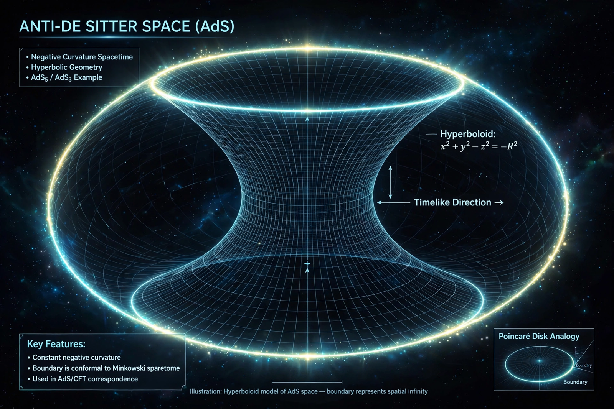

Quantum gravity in anti-de Sitter space

Quantum gravity in anti-de Sitter space refers to the study of quantum gravitational physics — chiefly within string theory — in spacetimes whose large-scale geometry approaches anti-de Sitter space (AdS), a solution of Einstein's equations with a negative cosmological constant. AdS has become the best-understood setting for quantum gravity largely because of the AdS/CFT correspondence, which states that a theory of quantum gravity in the AdS "bulk" is exactly equivalent to an ordinary quantum field theory — a conformal field theory (CFT) without gravity — living on the spacetime's boundary.
Anti-de Sitter space
Anti-de Sitter space is the maximally symmetric Lorentzian manifold with constant negative scalar curvature. Unlike the de Sitter universe associated with a positive cosmological constant, AdS has a timelike boundary at spatial infinity: light can travel to the boundary and back in finite coordinate time, so AdS behaves in some respects like a box, with a discrete spectrum for many fields. These properties make boundary conditions well-defined and the space a natural arena for holography. In string theory, AdS arises concretely as the near-horizon geometry of stacks of D-branes — most famously AdS5 × S5 for D3-branes.
The correspondence as a definition of quantum gravity
Juan Maldacena's 1997 proposal equated Type IIB string theory on AdS5 × S5 with maximally supersymmetric Yang–Mills theory in four dimensions. Because the boundary theory is an ordinary (if strongly coupled) quantum field theory that can in principle be defined non-perturbatively, the correspondence supplies a complete, background-independent-in-spirit definition of quantum gravity for asymptotically AdS spacetimes — the only such explicit framework currently available. The duality has been used to compute black hole entropy from microstate counting, to model strongly interacting matter such as quark–gluon plasma, and to argue that bulk spacetime geometry emerges from entanglement in the boundary theory, notably via the Ryu–Takayanagi formula relating entanglement entropy to areas of extremal surfaces.
Open problems
Outstanding issues include extending holographic methods from AdS to cosmologically realistic de Sitter-like spacetimes, understanding the interior of black holes and the firewall debate, reconstructing local bulk physics from boundary data (the "subregion duality" and quantum error-correction picture), and making precision tests of the duality beyond the supergravity approximation. Nevertheless, AdS remains the principal laboratory in which ideas about quantum gravity — unitarity of black hole evaporation, emergence of spacetime, and the information paradox — can be formulated sharply and, in favourable cases, settled.
See also: AdS/Holographic principle · String theory · Quantum gravity · Black hole